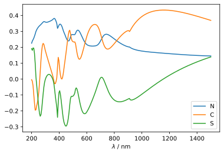
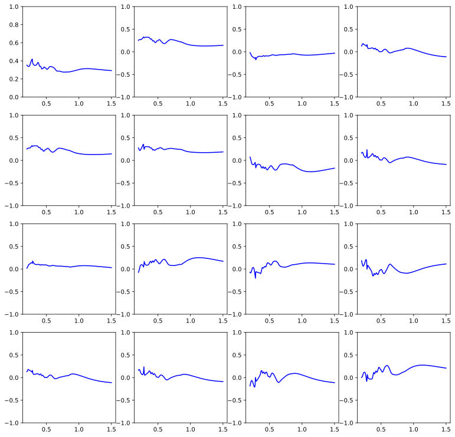
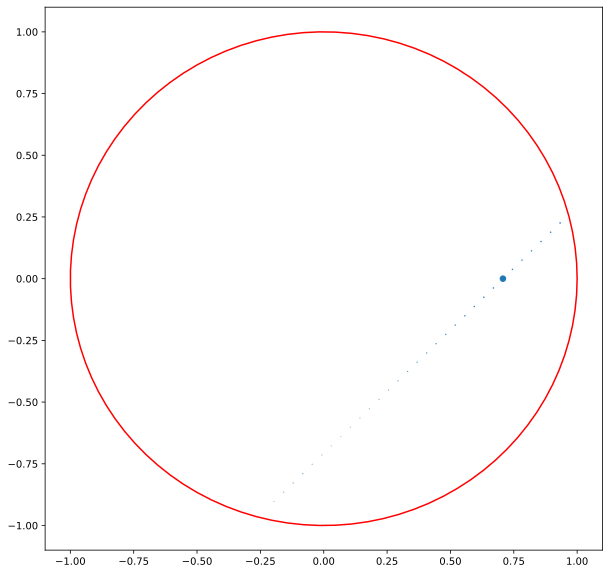
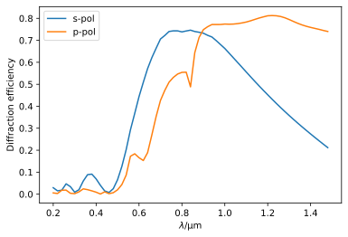
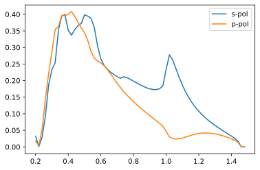

Using the RCW module¶
The RCW module of pySCATMECH implements the SCATMECH::RCW_Model class, which is a rigorous coupled wave (RCW) solver for one-dimensionally periodic gratings. This notebook will demonstrate a number of its features.
First, we import the module. Since we are also using numpy and matplotlib, we will import those, too.
In [1]:
import matplotlib.pyplot as plt
import numpy as np
from pySCATMECH.rcw import *
Single line grating¶
We will start our demonstration with a single line grating. We can create a RCW_Model with parameters:
In [2]:
gratingParameters = {
None : 'Single_Line_Grating', # The Grating model can be assigned with the `None` key
'period' : 0.2, # The period
'medium_i' : 1, # The incident medium0
'medium_t' : 'silicon', # The transmitting (substrate) material
'material' : 'silicon', # The grating material
'space' : 1, # The space material
'height' : 0.2, # The height
'topwidth' : 0.1, # Top width
'bottomwidth' : 0.15, # Bottom width
'offset' : 0, # Offset of top, relative to bottom
'nlevels' : 10} # Number of layers in the staircase approximation
rcwParameters = {
'order' : 25, # number of Floquet orders considered
'type' : 0, # 0 indicates reflection
'lambda' : 0.532, # wavelength
'thetai' : 70, # incident angle in degrees
'rotation' : 0, # rotation angle in degrees
'grating' : gratingParameters
}
model = RCW_Model(rcwParameters)
print(model)
{None : 'RCW_Model',
'order' : '25',
'type' : '0',
'lambda' : '0.532',
'thetai' : '70',
'rotation' : '0',
'grating' : {None : 'Single_Line_Grating',
'period' : '0.2',
'medium_i' : '(1,0)',
'medium_t' : 'silicon',
'material' : 'silicon',
'space' : '(1,0)',
'height' : '0.2',
'topwidth' : '0.1',
'bottomwidth' : '0.15',
'offset' : '0',
'nlevels' : '10'}}
Let’s show the NCS parameters for the 0th order diffraction (specular) as a function of wavelength:
In [3]:
# 250 wavelengths from 0.2 to 1.5...
wavelengths = np.linspace(0.2, 1.5, 250)
def rcw(wavelength):
rcwParameters['lambda'] = wavelength
model.setParameters(rcwParameters)
return model.DiffractionEfficiency(0)
muellerMatrices = [rcw(wavelength) for wavelength in wavelengths]
N = [m[0,1] for m in muellerMatrices]
C = [m[2,2] for m in muellerMatrices]
S = [m[2,3] for m in muellerMatrices]
plt.plot(wavelengths*1000, N, label="N")
plt.plot(wavelengths*1000, C, label="C")
plt.plot(wavelengths*1000, S, label="S")
plt.xlabel('$\lambda$ / nm')
plt.legend()
plt.show()

Let’s do the same thing, but rotate the sample 45 degrees. The Mueller matrices are no longer block diagonal.
In [4]:
wavelengths = np.linspace(0.2, 1.5, 250)
rcwParameters['rotation'] = 45
model.setParameters(rcwParameters)
def rcw(wavelength):
rcwParameters['lambda'] = wavelength
model.setParameters(rcwParameters)
return model.DiffractionEfficiency(0)
muellerMatrices = [rcw(wavelength) for wavelength in wavelengths]
plt.figure(figsize = [13,13])
for element in range(16):
plt.subplot(4,4,element+1)
if element==0:
plt.ylim(0,1)
else:
plt.ylim(-1,1)
plt.plot(wavelengths,[m[element//4,element%4] for m in muellerMatrices],'b-')
plt.show()

What does this grating look like?
In [5]:
def showGrating(model,x,z):
xx, zz = np.meshgrid(x, z, sparse=True)
def eps(x,z):
return model.getEpsilon(x,z).real
epsilon = np.array([[eps(x0,z0) for x0 in x] for z0 in z])
fig = plt.figure(figsize=(6,5))
ax = fig.add_subplot(111)
h = ax.contourf(x,z,epsilon,256,cmap="brg")
plt.colorbar(h,ax=ax)
plt.show()
showGrating(model,np.linspace(-0.2, 0.2, 200),np.linspace(-0.3,.1,200))

One can view the diffraction pattern:
In [6]:
gratingParameters = {
None : 'Single_Line_Grating',
'period' : 10,
'medium_i' : 1,
'medium_t' : 'silicon',
'material' : 'silicon',
'space' : 1,
'height' : '0.5',
'topwidth' : '0.4',
'bottomwidth' : '0.15',
'offset' : '0',
'nlevels' : '10'}
rcwParameters = {
None : 'RCW_Model',
'order' : '25',
'type' : '0',
'lambda' : '0.532',
'thetai' : 45,
'rotation' : 45,
'grating' : gratingParameters
}
model.setParameters(rcwParameters)
def plotDiffractionPattern(model):
order = int(model.getParameter("order"))
x, y, I = [], [], []
for i in range(-order,order):
direction = model.Direction(i)
if direction[2] != 0 :
x.append(direction[0])
y.append(direction[1])
I.append(model.DiffractionEfficiency(i)[0,0])
thetas = np.linspace(0, 2*pi, 100)
circlex = np.cos(thetas)
circley = np.sin(thetas)
plt.figure(figsize = (10,10))
ax = plt.subplot(111)
ax.scatter(x, y, s=np.array(I)*100)
ax.plot(circlex, circley, c = 'r')
plt.show()
plotDiffractionPattern(model)

Blazed reflection grating¶
In [7]:
# Set the lines per millimeter:
lpm = 600
# Set the nominal wavelength in µm:
blazeLambda = 1.00
##########################
period = 1000/lpm
sinBlaze = blazeLambda/2/period
height = period*sinBlaze
##########################
# Description of the grating...
gratingParameters = {None: 'Triangular_Grating',
'period': 1000/lpm,
'medium_i': 1,
'medium_t': 'aluminum',
'material': 'aluminum',
'amplitude' : height,
'aspect' : 1,
'nlevels' : 20}
# The RCW parameters
rcwParameters = {
None : 'RCW_Model',
'order' : 25,
'type' : 0,
'lambda' : 0.500,
'thetai' : 0,
'rotation' : 0,
'grating' : gratingParameters
}
model = RCW_Model(rcwParameters)
def efficiency(wavelength):
"""Set the wavelength and calculate the efficiency"""
thetai=math.asin(wavelength/2/period)
model.setParameters(wavelength=wavelength,thetai=thetai)
return model.DiffractionEfficiency(1)
wavelengths = np.arange(0.2, 1.5, 0.02)
eff = [efficiency(L) for L in wavelengths]
effs = [Sensitivity('u') @ e @ Polarization('s') for e in eff]
effp = [Sensitivity('u') @ e @ Polarization('p') for e in eff]
plt.figure()
plt.plot(wavelengths, effs, label = "s-pol")
plt.plot(wavelengths, effp, label = "p-pol")
plt.xlabel("$\lambda$/µm")
plt.ylabel("Diffraction efficiency")
plt.legend()
plt.show()
showGrating(model,np.linspace(-6, 6, 200),np.linspace(-6,6,200))


Sinusoidal transmission grating¶
In [8]:
# Set the lines per millimeter:
lpm = 1000
# Sinusoid amplitude:
amplitude = .5
# Incident angle:
thetai = 45*deg
period = 1000/lpm
from pySCATMECH.fresnel import OpticalFunction
FusedSilica = OpticalFunction(lambda L: 1.4580 + 0.00354/L**2, np.arange(0.2,1.5,0.05))
# Description of the grating...
gratingParameters = {None: 'Sinusoidal_Relief_Grating',
'period': period,
'medium_i': 1,
'medium_t': FusedSilica,
'material': FusedSilica,
'amplitude' : amplitude,
'base' : 0,
'option' : 0,
'nlevels' : 20}
# The RCW parameters
rcwParameters = {
None : 'RCW_Model',
'order' : 10,
'type' : 1,
'lambda' : 0.500,
'thetai' : 0,
'rotation' : 0,
'grating' : gratingParameters
}
model = RCW_Model(rcwParameters)
def efficiency(wavelength):
"""Set the wavelength and calculate the efficiency"""
rcwParameters['lambda'] = wavelength
model.setParameters(rcwParameters)
return model.DiffractionEfficiency(1)
wavelengths = np.arange(0.2, 1.5, 0.02)
eff = [efficiency(L) for L in wavelengths]
effs = [Sensitivity('u') @ e @ Polarization('s') for e in eff]
effp = [Sensitivity('u') @ e @ Polarization('p') for e in eff]
plt.figure()
plt.plot(wavelengths, effs, label = "s-pol")
plt.plot(wavelengths, effp, label = "p-pol")
plt.legend()
plt.show()
showGrating(model,np.linspace(-6, 6, 200),np.linspace(-6,6,200))
